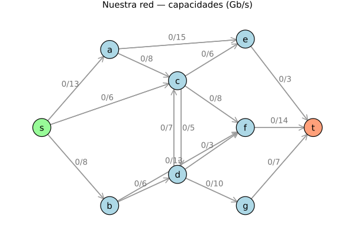

Nuestra red
Backbone de un ISP
s es el punto de peering donde entra el tráfico, t el data center que lo consume, los intermedios son enrutadores. Capacidades en Gb/s.
▸ 9 nodos · 16 arcos · antiparalelo c ⇄ d

✓9 nodos · se piden ≥ 8
✓16 arcos · se piden ≥ 12
✓c ⇄ d antiparalelo (5/7)
✓BFS 5 ≠ DFS 8 iteraciones
▸ El proceso de diseño · 400 000 combinaciones probadas
intento 1
Capacidades a ojo. Falló 2 de 4 requisitos: BFS y DFS daban ambos 7 iteraciones y nadie usaba retroceso. Encima el corte salía trivial.
intento 2
La topología se dibuja a mano; las capacidades se buscan. Exigimos 6 condiciones a la vez y exploramos el espacio 2..15.
▸ Por qué se descartó cada candidata
DFS no resulta peor que BFS
77.5%
BFS no usa retroceso
22.0%
DFS no usa retroceso
0.5%
Corte mínimo trivial
0.01%
Solo el 0.02% de las redes cumple las seis condiciones a la vez.
Ese número es un resultado en sí mismo: con capacidades al azar, DFS iguala o supera a BFS el 77.5% de las veces. Por eso la red CLRS no logra separarlos.